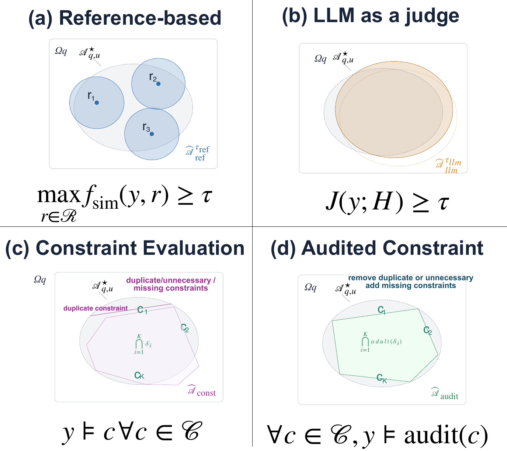

What I work on

Accuracy and individual fairness
A fair model that is wrong is not useful, and an accurate one that is biased is not trustworthy. Accurate fairness asks a model to treat an individual and all of their similar counterparts according to the individual's ground truth. A Siamese training scheme optimises it, and a fairness confusion matrix measures it.
AAAI-23 paper →
Robustness meets fairness
One harmless edit to a sentence can break a prediction and make two similar people get different answers. Robust individual fairness requires both to hold at once, and RIFair, a black-box attack, finds the robust-but-biased and fair-but-wrong cases that single-axis evaluations miss.
KDD '26 paper →
Evaluating LLM personalization
Did the model follow the user's preferences without drifting from the task? I turn preferences and references into semantic constraints, audit the constraints so they are neither over- nor under-specified, and verify responses with natural language inference instead of a costly LLM judge.
Preprint and code →